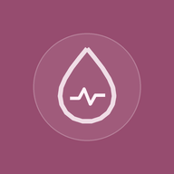

ติดตั้ง Anemia Portal
เปิดแบบประเมิน บทเรียน และทีมของฉันได้จากหน้าจอหลักของมือถือ
เพิ่มไว้ที่หน้าจอหลัก
ถ้าเปิดจาก Anemia Staff ให้เลือกเปิดหน้านี้ในเบราว์เซอร์ก่อน แล้วเลือกติดตั้ง Anemia Portal
iPhone และ iPad เปิดใน Safari กดแชร์ แล้วเลือก “เพิ่มไปยังหน้าจอโฮม”
Android เปิดใน Chrome แล้วเลือก “ติดตั้งแอป” หรือ “เพิ่มลงในหน้าจอหลัก” จากเมนู ⋮